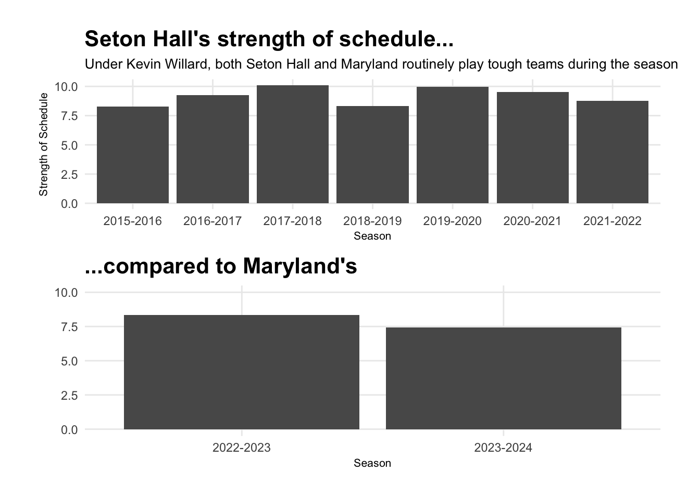
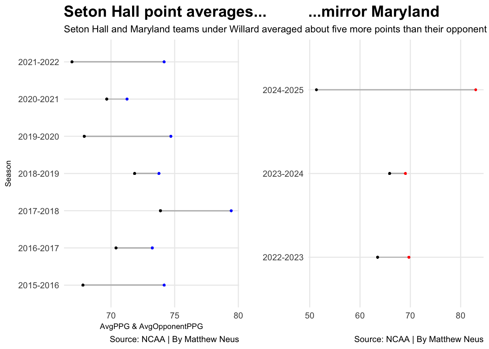
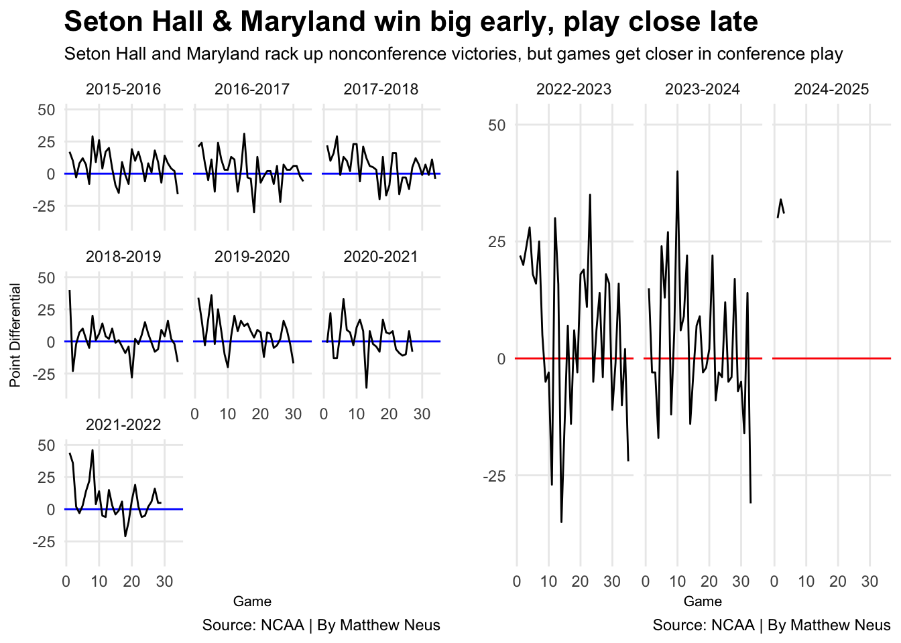

Kevin Willard succeeds against same-level competition
lowercaseword
lowercaseword
lowercaseword
Author
Matthew Neus
Published
November 13, 2024
Teams led by Kevin Willard have experienced some success.
He led Seton Hall to the NCAA tournament in five different season and won over 200 games as the head coach. He made the national tournament in his first year at Maryland, but suffered a setback last season as Maryland missed the tourney.
Many Willard teams experience success early in the season, blowing out inferior out-of-conference opponents. The wins do carry into conference play, but his teams play closer games against better opposition.
Code
library(tidyverse)library(cowplot)library(ggalt)library(scales)library(ggplot2)library(ggrepel)logs <-read_csv("https://raw.githubusercontent.com/dwillis/dwillis.github.io/main/docs/sports-data-files/cbblogs1525.csv")shwillard <- logs |>group_by(Season) |>filter(Team =="Seton Hall") |>filter(Season =="2015-2016"| Season =="2016-2017"| Season =="2017-2018"| Season =="2018-2019"| Season =="2019-2020"| Season =="2020-2021"| Season =="2021-2022") |>mutate(AvgOppPPG =mean(OpponentScore), AvgPPG =mean(TeamScore), pdiff = TeamScore - OpponentScore)mdwillard <- logs |>group_by(Season) |>filter(Team =="Maryland") |>filter(Season =="2022-2023"| Season =="2023-2024"| Season =="2024-2025") |>mutate(AvgOppPPG =mean(OpponentScore), AvgPPG =mean(TeamScore), pdiff = TeamScore - OpponentScore)
One of the metrics I like to look at when seeing if a team’s good record is because the team is good is strength of schedule. Of course, any team can beat another team in any game. But the strength of schedule metric allows us to see if teams consistently play tough opposition, or if they just win games against poor opponents.
Both Seton Hall and Maryland under Willard have played tough schedules. It helps that Seton Hall is in the Big East and Maryland is in the Big Ten, but quality nonconference foes appear on the schedules for both teams in multiple different years.
Both programs kept their season average for strength of schedule above 7.5 for each year Willard was the head coach. I’ve left out this current season’s strength of schedule for Maryland, since its only played three games.
Code
shwillardsos <- shwillard |>group_by(Season) |>filter(Game =="1") |>summarise(TeamSOS)mdwillardsos <- mdwillard |>group_by(Season) |>filter(Game =="1") |>filter(Season =="2022-2023"| Season =="2023-2024") |>summarise(TeamSOS)chart5 <-ggplot() +geom_bar(data=shwillardsos, aes(x=Season, weight=TeamSOS) ) +labs(title="Seton Hall's strength of schedule...",subtitle ="Under Kevin Willard, both Seton Hall and Maryland routinely play tough teams during the season",x="Season", y="Strength of Schedule") +theme_minimal() +theme(plot.title =element_text(size =16, face ="bold"),axis.title =element_text(size =8), plot.subtitle =element_text(size=10), panel.grid.minor =element_blank() ) chart6 <-ggplot() +geom_bar(data=mdwillardsos, aes(x=Season, weight=TeamSOS) ) +labs(title="...compared to Maryland's", x="Season", y="") +theme_minimal() +scale_y_continuous(limits =c(0,10)) +theme(plot.title =element_text(size =16, face ="bold"),axis.title =element_text(size =8), plot.subtitle =element_text(size=10), panel.grid.minor =element_blank() ) plot_grid(chart6, chart5) +coord_flip()
Coordinate system already present. Adding new coordinate system, which will
replace the existing one.

Willard’s teams at Seton Hall almost mirror his sides at Maryland in how close the games are. At Seton Hall, Willard’s offense averaged just over 74 points from 2015 to the end of the 2021-22 season, while his defense gave up an average of 70 points. At Maryland, that gap is almost identical. Over his first three seasons, his Maryland teams have scored about 69 points a game while giving up an average of 65.
Willard’s teams at Maryland, so far, haven’t been as good scoring the ball as previous Willard teams at Seton Hall. But they’ve been better at stopping their opposition from scoring. Although the scoring output is low for both teams, Willard teams have a tendency to win games by about four points at both Seton Hall and Maryland.
Teams under Willard have been able to on average score more points than they give up. But the margins each season aren’t large, suggesting he coaches in a lot of close battles in both the Big East and the Big Ten.
Code
chart1 <-ggplot() +geom_dumbbell(data=shwillard, aes(y=Season, x=AvgPPG, xend=AvgOppPPG),colour ="grey",colour_x ="blue",colour_xend ="black") +labs(title ="Seton Hall point averages...", subtitle="Seton Hall and Maryland teams under Willard averaged about five more points than their opponent", x="AvgPPG & AvgOpponentPPG", y="Season", caption="Source: NCAA | By Matthew Neus") +theme_minimal() +theme(plot.title =element_text(size =16, face ="bold"),axis.title =element_text(size =8), plot.subtitle =element_text(size=10), panel.grid.minor =element_blank() )chart2 <-ggplot() +geom_dumbbell(data=mdwillard, aes(y=Season, x=AvgPPG, xend=AvgOppPPG),colour ="grey",colour_x ="red",colour_xend ="black") +labs(title ="...mirror Maryland", subtitle="", x="", y="", caption="Source: NCAA | By Matthew Neus") +theme_minimal() +theme(plot.title =element_text(size =16, face ="bold"),axis.title =element_text(size =8), plot.subtitle =element_text(size=10), panel.grid.minor =element_blank() )plot_grid(chart1, chart2)
Warning: Using the `size` aesthetic with geom_segment was deprecated in ggplot2 3.4.0.
ℹ Please use the `linewidth` aesthetic instead.

Kevin Willard likes to play good teams during the season at both Seton Hall and Maryland. The performance of his teams, in terms of scoring and defense, are similar. But that closeness is not felt throughout the entire season.
The point differential for Willard’s teams are scattered. But one trend that occurs during his years at both Seton Hall and Maryland is that his sides win big in early season contests, which is usually nonconference contests. There are occurrences where he loses games early in the season, like in 2018, but that game was against the Big Ten’s Nebraska.
The point differential when you move deeper into the season levels out to closer wins or losses. There is the occasional conference game where Maryland lost by a large margin, like when Maryland lost by 31 to Wisconsin last year, but there is a consistent trend of Willard teams winning by large amounts in early games to then playing closer games down the stretch.
I’ve included the current season for Maryland to show that, like past Willard teams, there were large margins of victory in the opening set of games.
Code
chart3 <-ggplot() +geom_hline(yintercept=0.0, color="blue") +geom_line(data=shwillard, aes(x=Game, y=pdiff, group=Season)) +scale_y_continuous(limits =c(-40,50)) +facet_wrap(~Season) +labs(title ="Seton Hall & Maryland win big early, play close late", subtitle="Seton Hall and Maryland rack up nonconference victories, but games get closer in conference play", x="Game", y="Point Differential", caption="Source: NCAA | By Matthew Neus") +theme_minimal() +theme(plot.title =element_text(size =16, face ="bold"),axis.title =element_text(size =8), plot.subtitle =element_text(size=10), panel.grid.minor =element_blank() )chart4 <-ggplot() +geom_hline(yintercept=0.0, color="red") +geom_line(data=mdwillard, aes(x=Game, y=pdiff, group=Season)) +scale_y_continuous(limits =c(-40,50)) +facet_wrap(~Season) +labs(title ="", subtitle="", x="Game", y="", caption="Source: NCAA | By Matthew Neus") +theme_minimal() +theme(plot.title =element_text(size =16, face ="bold"),axis.title =element_text(size =8), plot.subtitle =element_text(size=10), panel.grid.minor =element_blank() )plot_grid(chart3, chart4)

Maryland under Willard is very similar to Seton Hall coached by the same man. Both teams played teams on similar levels during each season he was at either program. His teams at both schools even averaged around the same difference between points scored and opponent’s points scored.
Willard teams can be described as those that, on average, score more points than their opponents, but not by a big margin each season. They will start strong and rack up big wins in early-season matchups, but closer affairs will follow as the season goes on longer.
Willard has found success at both Seton Hall and Maryland, taking both programs to the NCAA tournament. He’s done it through coaching teams through tough schedules and making sure his teams average more points than the teams he faces.